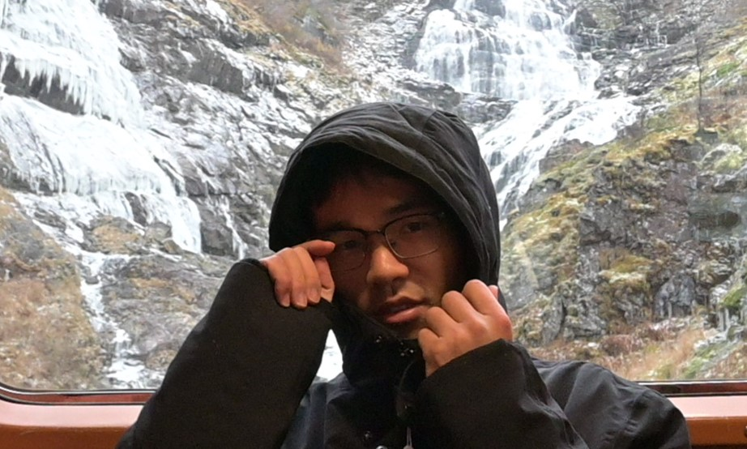

About Me
Hey there! 👋 I'm Peng. I'm doing my master study in the double degree program between KTH and Aalto University. Currently I'm writing my thesis (Anomaly Detection Empowered by Diffusion Models) under the guidance of Prof. Chao Yang and Professor Lei Feng. My study focuses on the implementation and application of Artificial Intelligence Algorithms. I love being in nature and enjoy sitting and hiking in forests and mountains. I have a deep passion for reading, from ancient Stoic philosophy to Hayek's political economy theories. Their spartan character and simple way of life shaped my life and mind.
📄 You can find my detailed CV here.